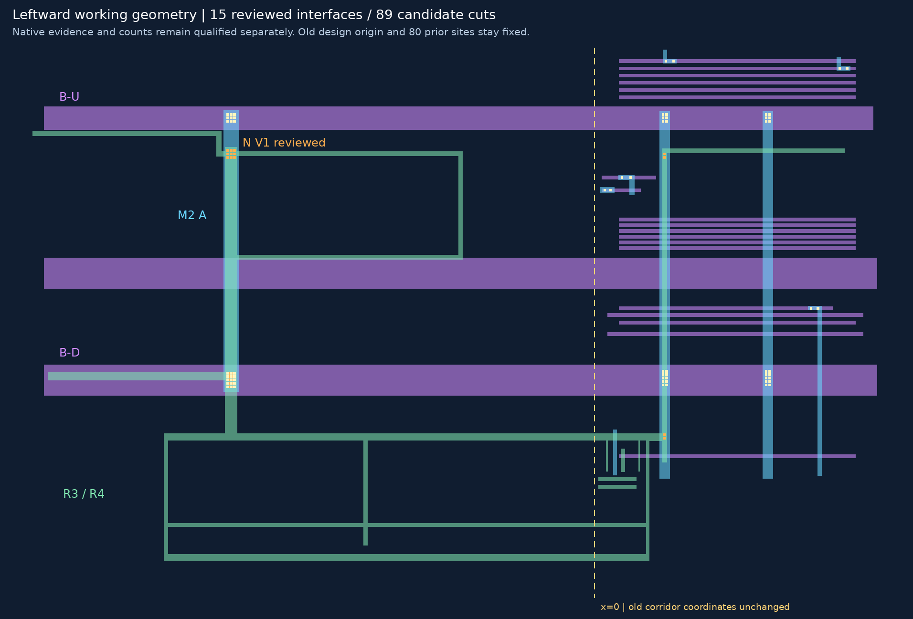
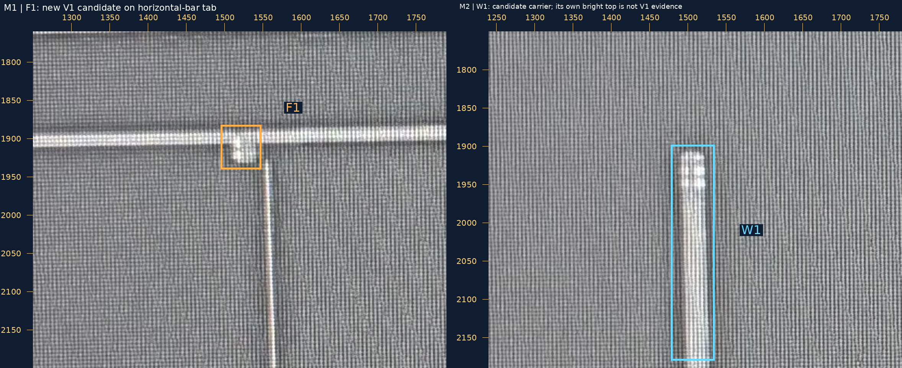
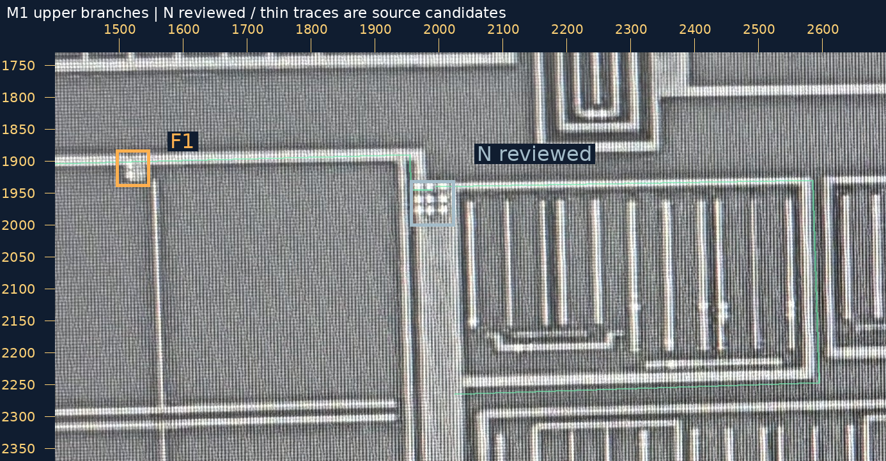
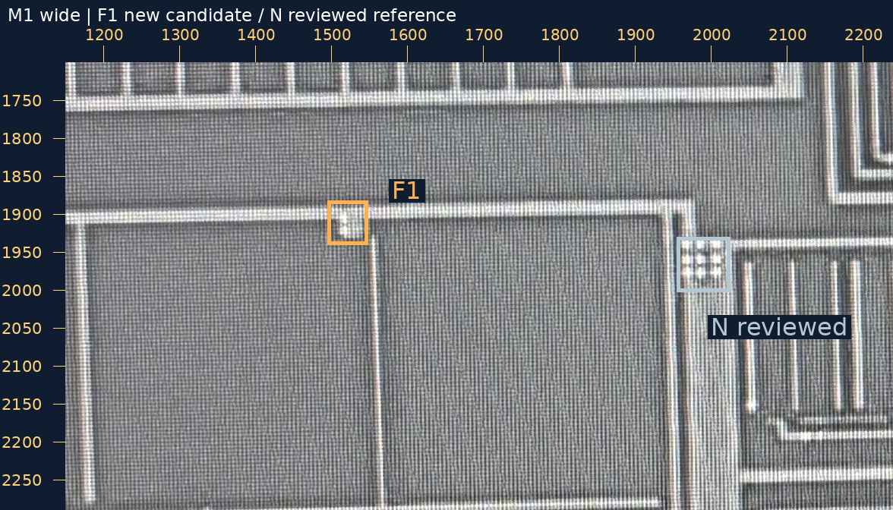
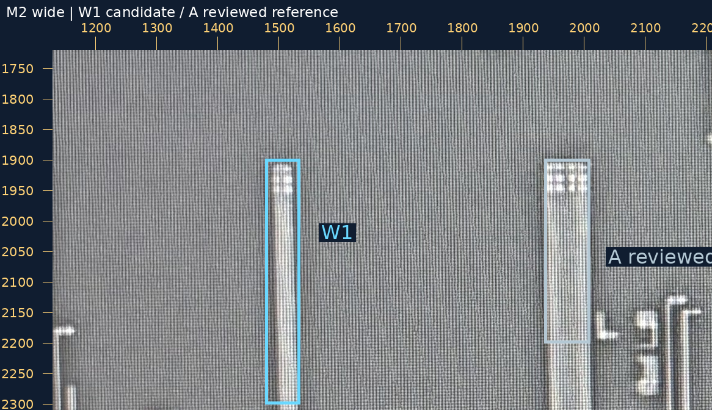
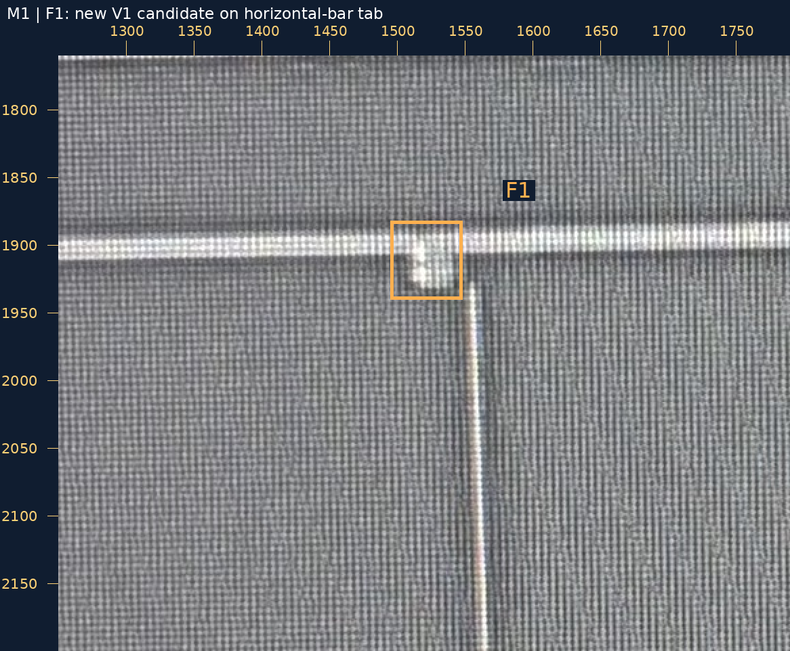
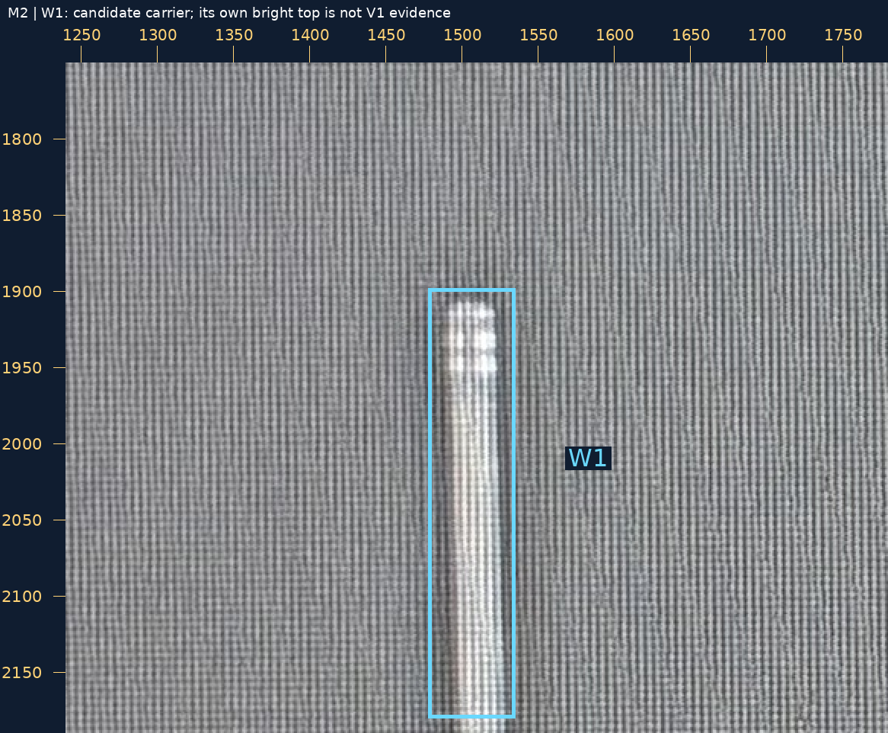

2026-10-30 · N 原人审记录保留为2026-10-29 · 工作几何接续及新的来源核查
你的原话“N：是 V1，接 A”已绑定原问题和原送审图。N 的完整3×3阵列作为AI候选补入，物理孔数／精密尺寸未批准。现在35条金属候选、15条已审接口、89个设计候选孔；原14接口、80孔中心和旧几何保持。
接着核查上方M1：右支沿外围返回同一宽M1；左支通过短台阶接上横条并继续向左。外围连续部分已补成规则候选，内部细指未声称清点完整，附近有间隙的细竖线不自动连上。设计视口仍[-1500,0,780,1440]，原点及旧坐标不动。
完整SVG · 几何大图 · 切换M1/V1/M2/V2/M3

M1 上方横条下突小台阶的橙框 F1 孔组，是否为 V1，并接到 M2 蓝框 W1 的竖向段？W1 是 A 左侧的另一条较窄 M2；不判孔数，不把 M2 自身的上端亮点作为 V1 证据。
可回复“F1：是 V1，接 W1”，或指出需改处。N、Q1、U/D和其余旧接口不重审。W1孔数、它与M3的连接本次也不裁决。
两层各保留本层原生坐标，未互相投影；蓝框是承载搜索范围，不是实测金属边界。F1尚未加入工作接口。两层大邻域并排图

原生范围[1400, 1730, 2700, 2370]，整数放大1×。
原图 · 大图
原生范围[1150, 1700, 2240, 2290]，整数放大1×。
原图 · 大图
原生范围[1130, 1720, 2210, 2310]，整数放大1×。
原图 · 大图
原生范围[1250, 1760, 1790, 2200]，整数放大2×。
原图 · 大图
原生范围[1240, 1750, 1780, 2190]，整数放大2×。
原图 · 大图
15组完整设计阵列检查不等于照片孔数、精密来源几何或工艺DRC验证。source_to_design_transform=null，geometry_adopted=false，net_edges=[]，complete_network=false。左端仅出当前工作范围，不是物理终点。README/site/gh-pages保持，未提交或推送。浏览器交互未实测。